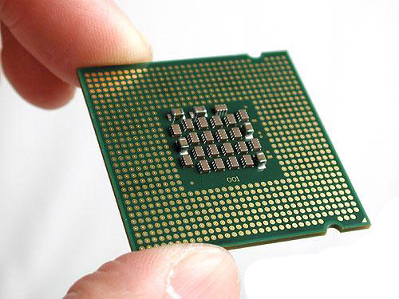

| Компьютер - универсальное устройство для хранения, обработки и передачи информации |
|
|  |
Процессор - устройство, обеспечивающее преобразование информации и управление другими устройствами компьютера |
| Оперативная память - устройство для хранения программ и данных, которые обрабатываются
процессором в текущем сеансе работы. При выключении компьютера вся информация, находившаяся в оперативной
паяти на момент выключения, стирается |
 |
 |
Устройство ввода информации - это аппаратные средства для преобразования информации из формы, понятной человеку в
форму, воспринимаемую компьютером |
| Устройства вывода - это аппаратные средства для преобразования компьютерного представления информации
в форму, понятную человеку |
 |
 |
Устройства хранения информации (внешняя память) - предназначены для долговременного хранения информации любого вида.
Выключение компьютера не приводит к очистке внешней памяти |
| Устройства для передачи информации преобразуют компьютерные данные в сигналы, пригодные для передачи
по электрическим, оптическим и телефонным линиям |
 |